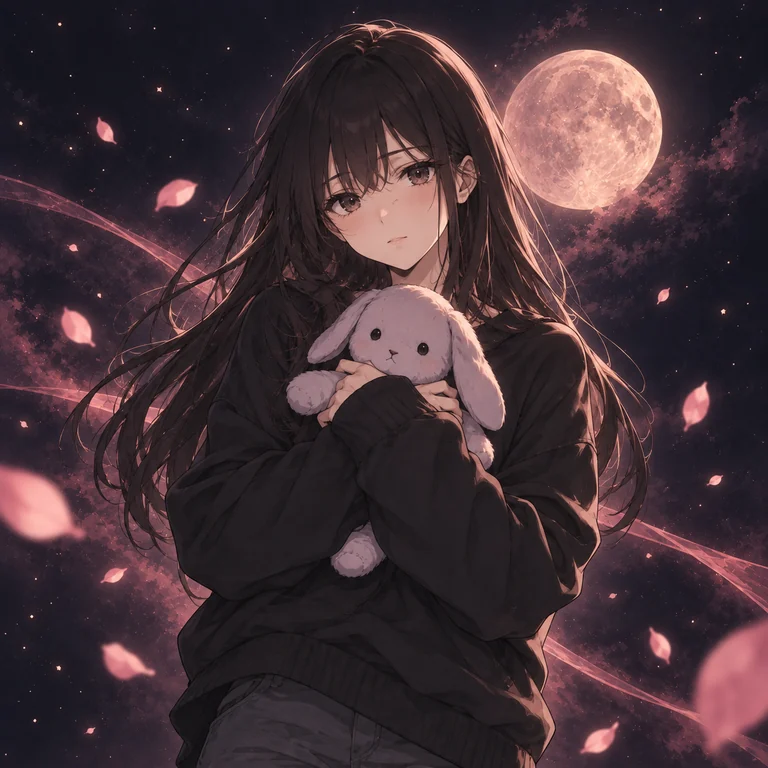 ミオMio 喪失系 · 思い出を抱く人 長い黒髪と黒いニットの女性。うさぎのぬいぐるみを抱き、大切なものを失う夢に残った気持ちを見つめる。 「大切だったことを、忘れなくていい。」
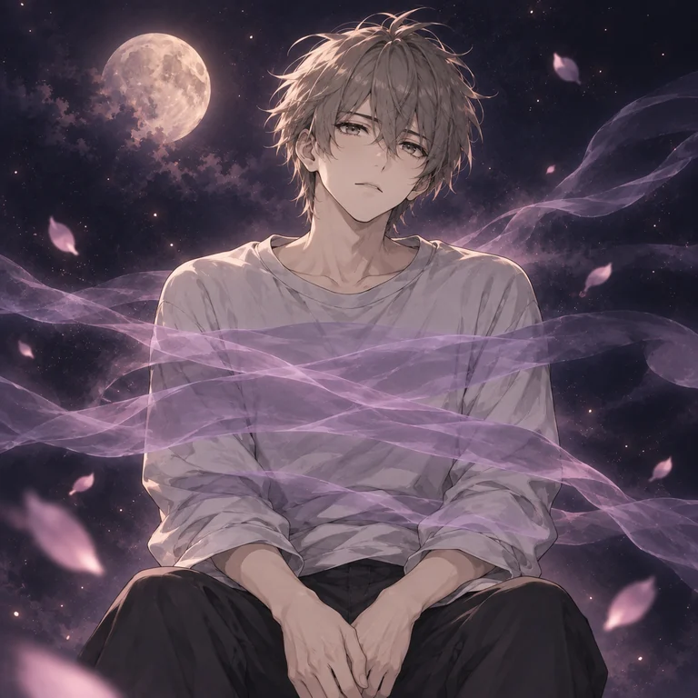 ナギNagi 拘束系 · 静けさの中の気づき手 灰色の髪と淡いシャツの青年。動けない夢のもどかしさを、胸元に漂う霧の帯で表現する。小さな感覚に静かに耳を澄ます。 「動けない夜の気持ちも、残しておこう。」
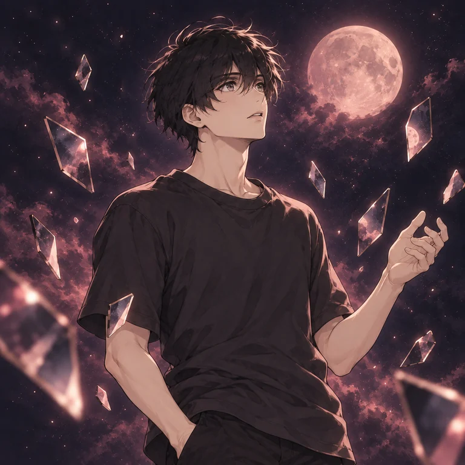 リツRitsu 崩壊系 · かけらの向こうを見る人 黒いTシャツを着た青年。世界がほどけるような夢の中で、浮かぶ鏡のかけらに次の景色を探す。 「かけらの向こうにも、景色はある。」
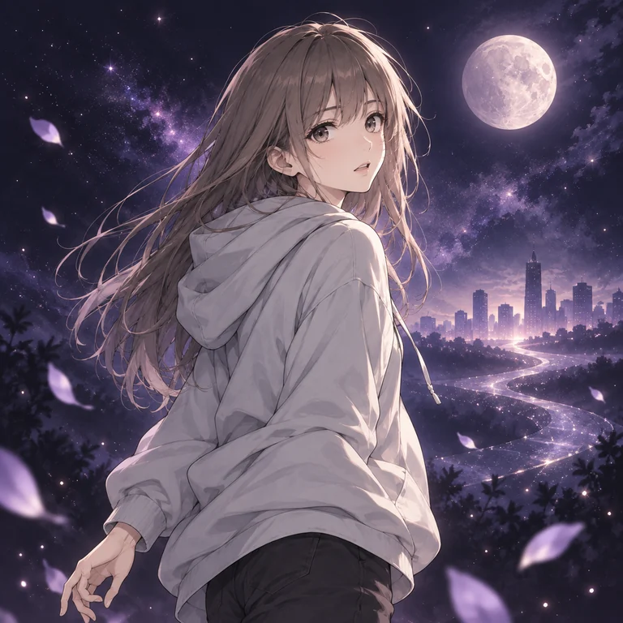 ハルカHaruka 未来暗示系 · 明日の景色を描く人 長い灰茶色の髪と淡いパーカーの女性。遠い街を望み、これから起こりそうに感じる夢を想像の地図として記録する。 「夢の続きを、想像してみよう。」
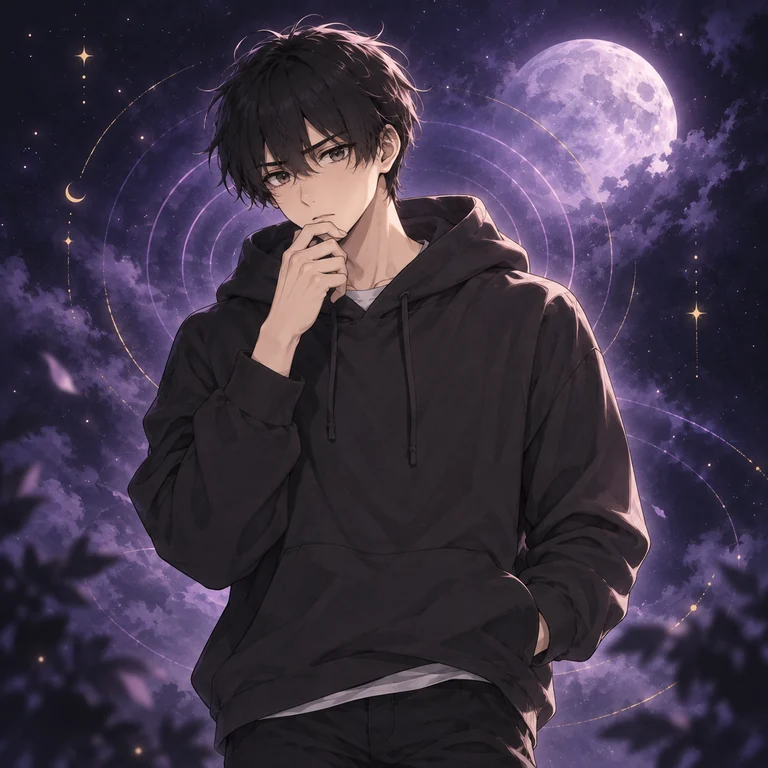 ケイKei 直感警告系 · 言葉になる前の聞き手 黒いパーカーで顎に手を添える青年。理由のわからない胸騒ぎを急いで答えにせず、夢の中の感情を言葉にしていく。 「まだ言葉にならなくても、大丈夫。」
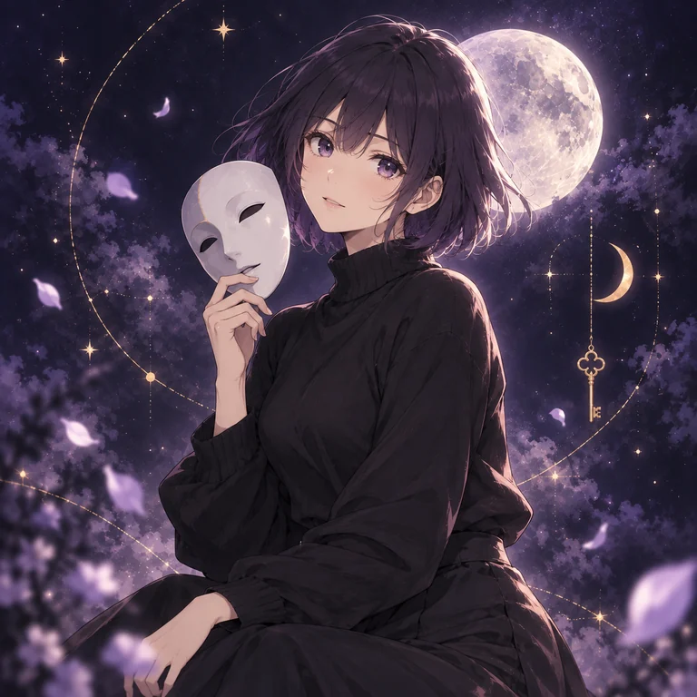 シオンShion 象徴解釈系 · 象徴の物語を読む人 紫がかったボブヘアの女性。白い仮面を手に、夢に現れたモチーフを眺める。同じ形にも複数の物語を見つける。 「そのモチーフ、きみにはどう映る？」
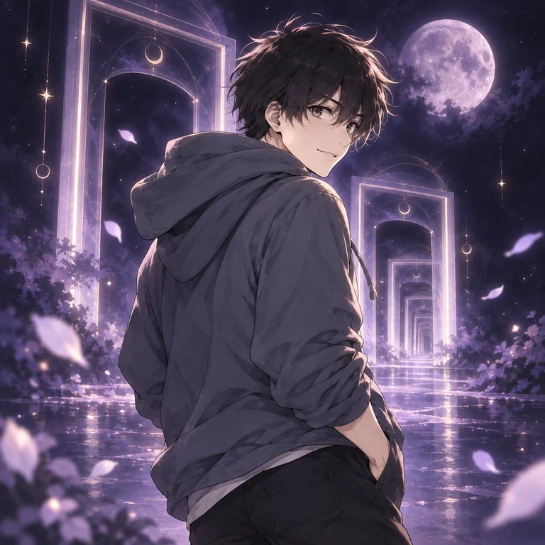 アオAo デジャヴ系 · 既視感の道を歩く人 黒髪と青灰色のパーカーの青年。初めての場所にも『前に来た気がする』と立ち止まり、記憶に似た夢の手触りをたどる。 「この感じ、どこで出会っただろう。」
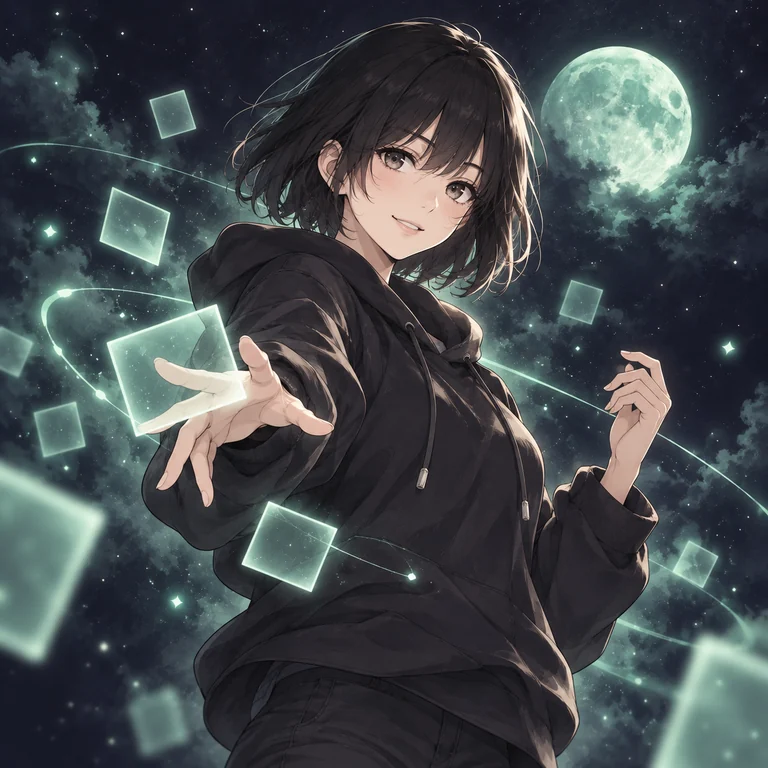 ヒカリHikari 明晰夢系 · 夢の景色を変える人 短い黒髪と黒いパーカーの女性。夢だと気づくと手を伸ばし、浮かぶ光のかたちを自由に並べ替えて遊ぶ。 「今夜の景色、どんな形にしよう？」
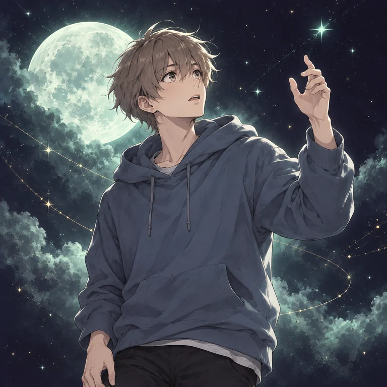 ユウトYuto 部分自覚系 · 夢の境目に気づく人 灰茶色の髪と青いパーカーの青年。夢だと気づいても思いどおりには動けず、その不思議な境目を驚きとともに観察する。 「気づいた瞬間も、ひとつの発見。」
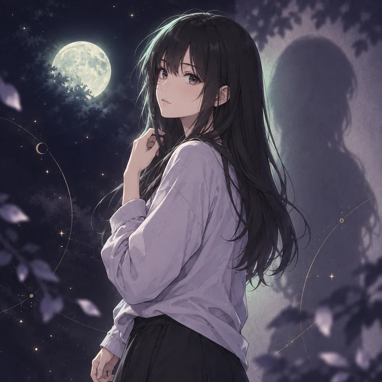 シズクShizuku 観察者系 · 夢を少し離れて眺める人 長い黒髪と薄紫の服の女性。自分を外側から見るような夢で、壁に落ちる影や景色との距離を静かに見つめる。 「眺めている自分も、夢の一部。」
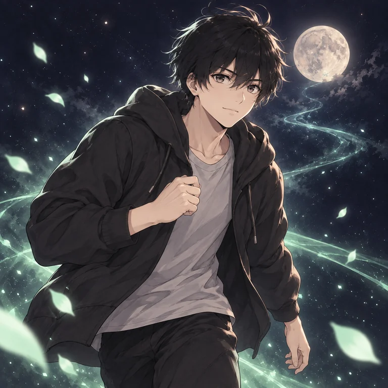 カケルKakeru 挑戦系 · 一歩先へ挑む人 黒髪と黒いパーカーの青年。夢の目標に向かって身を乗り出す。結果だけでなく、挑もうとした瞬間も大切にしている。 「今日の一歩を、覚えておこう。」
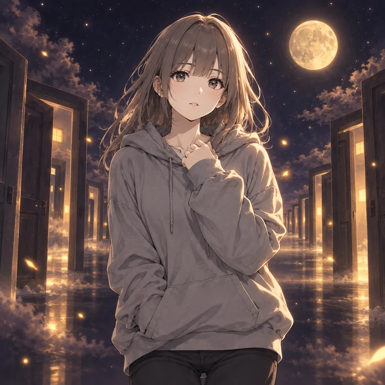 コマチKomachi 場所固定系 · 同じ場所の小さな探検家 灰茶色の長い髪とグレーのパーカーの女性。繰り返し訪れる廊下で、昨日と違う光や扉を一つずつ見つける。 「いつもの場所で、何が変わった？」
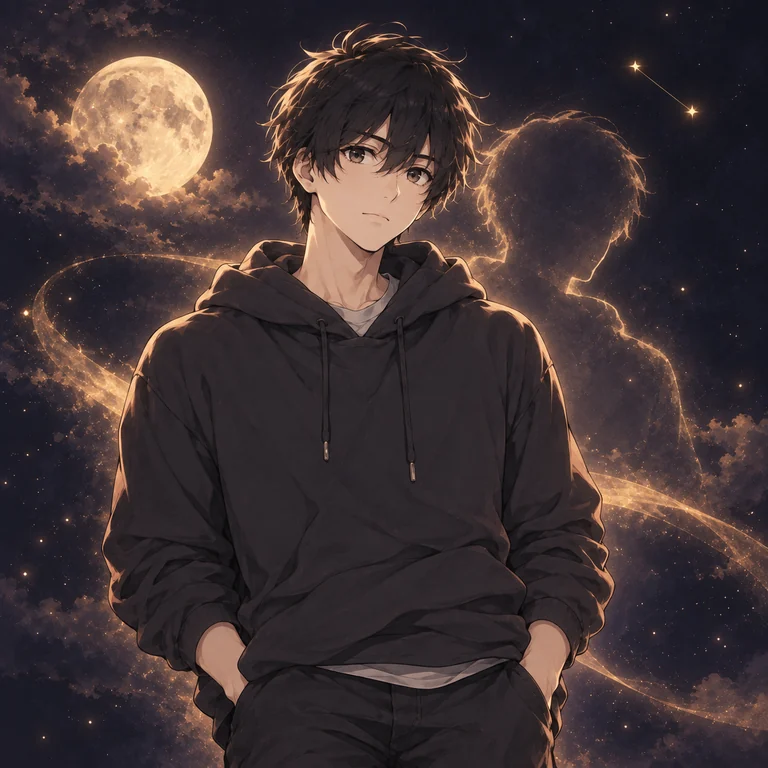 ツナグTsunagu 人物固定系 · 何度も出会う人の記録者 黒髪と濃いパーカーの青年。同じ誰かが登場する夢を覚えていて、相手との距離や会ったときの気持ちを書き留める。 「また会えた夜に、何を感じた？」
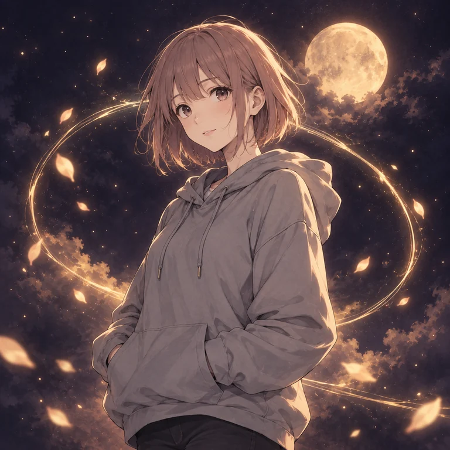 ツムギTsumugi 展開固定系 · くり返す物語の編み手 淡い茶桃色のボブとグレーのパーカーの女性。同じ展開の夢にも小さな違いを見つけ、次のページにつなげる。 「同じ展開に、今日の違いを。」
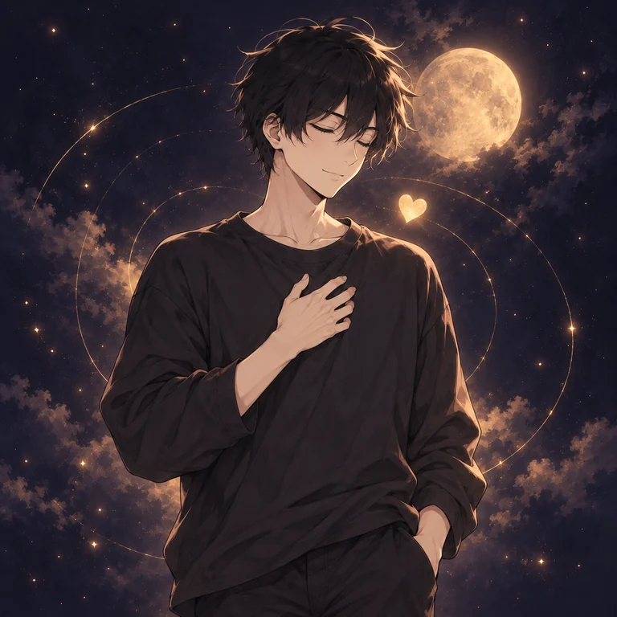 カナタKanata 感情固定系 · 気持ちの余韻を聴く人 黒髪と黒いシャツの青年。目を閉じ、違う夢にも繰り返し現れる感情を感じている。胸元の光は、その日の気持ちのしるし。 「その余韻に、今日の名前を。」